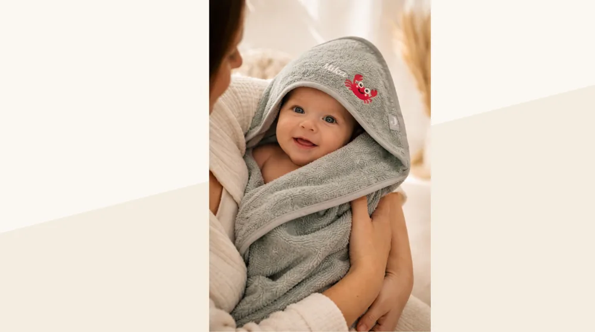
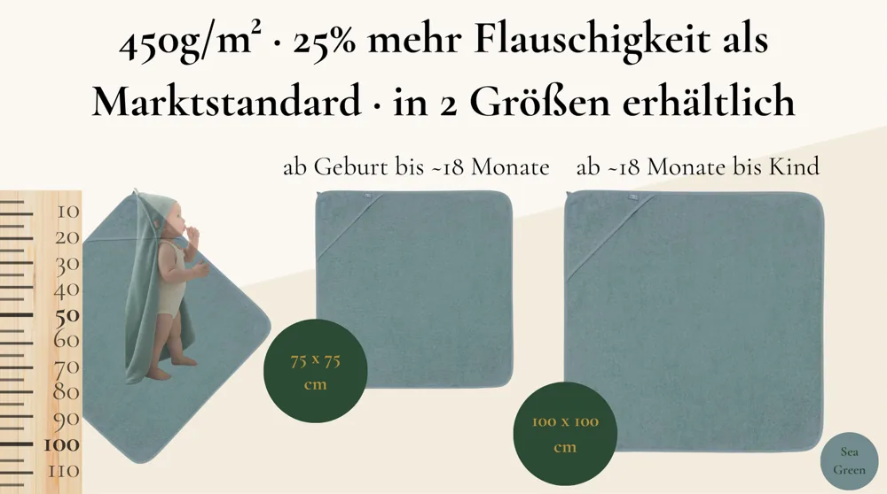
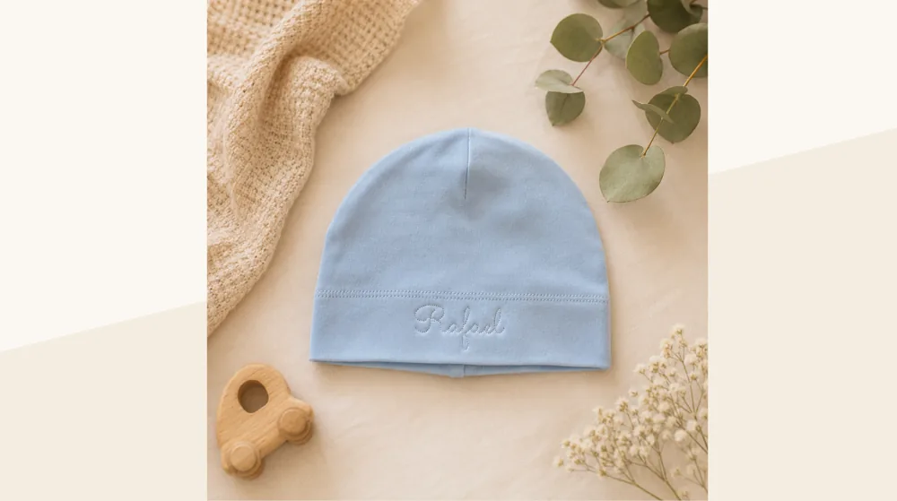
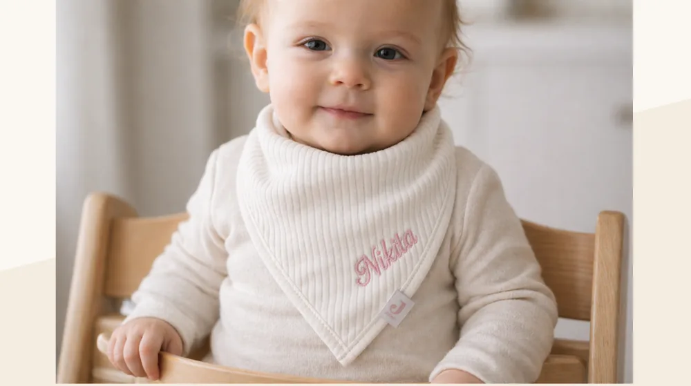
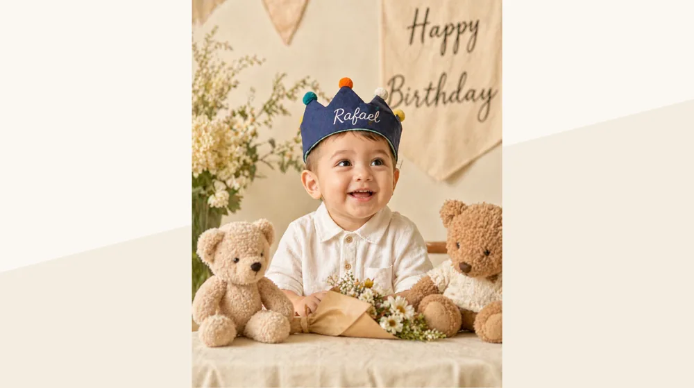
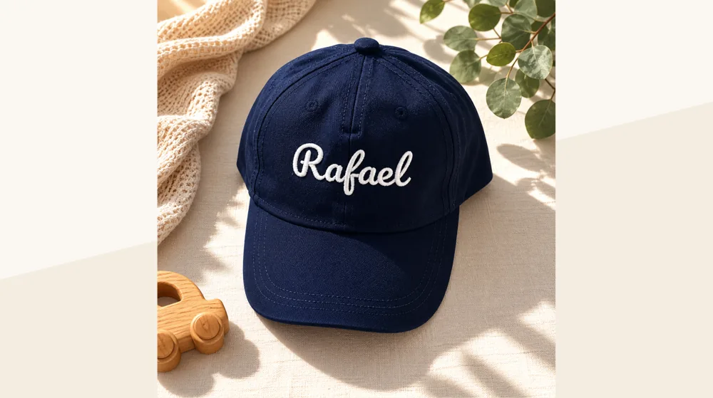
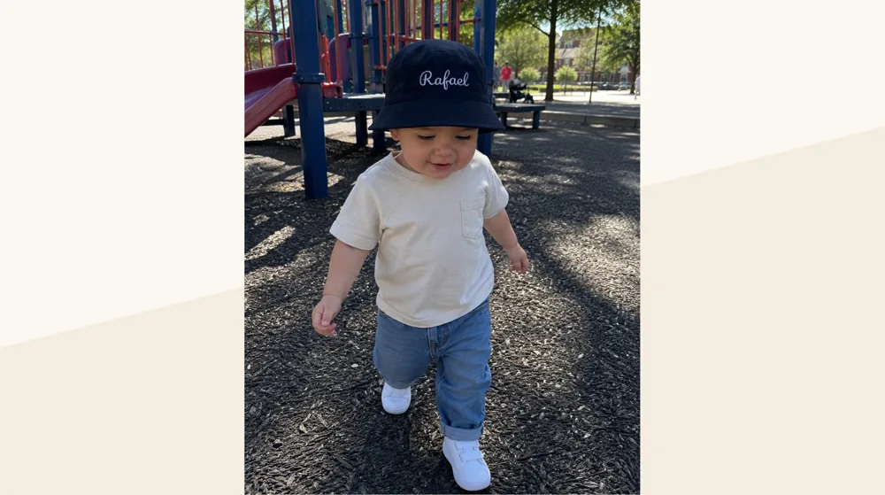

B2B-Stickerei · Made in Karlsruhe
Personalisierte Stickerei für Ihr Geschäft – in jeder Stückzahl.
BRODIRA ist Ihr Partner für personalisierte Bio-Baumwoll-Stickerei – für Babyfachhandel, Kliniken, Hotels und Unternehmen. Logo & Namen, gefertigt in Karlsruhe, geliefert in Mengen.

Für Geschäftskunden
Was wir für Sie besticken
Logo, Name oder individuelles Motiv – präzise, langlebig und in gleichbleibender Qualität.
GOTS-Bio-Qualität
100 % GOTS-zertifizierte Bio-Baumwolle von Stanley/Stella – Qualität, die zu Ihrer Marke passt.
Staffelpreise & Großhandel
Attraktive Konditionen ab der ersten Mengenbestellung – transparent, planbar und fair kalkuliert.
Namen, Logos & White-Label
Personalisierung mit Namen oder Ihrem Logo. Auf Wunsch neutrale Lieferung direkt an Ihre Kunden.
Unsere Partner
Für wen wir arbeiten
Gemacht für Unternehmen, die Wert auf Details legen – vom Einzelstück bis zur wiederkehrenden Serie.
Babyfachhandel & Boutiquen
Personalisierte Sortimente, die sich von der Stange abheben – als feste Linie oder saisonale Aktion.
Hebammen, Kliniken & Praxen
Willkommensgeschenke zur Geburt, bestickt mit Namen – in Ihrer Handschrift und Ihrem Anspruch.
Unternehmen & Personal
Hochwertige, persönliche Geschenke zur Geburt für Mitarbeitende – ein Detail, das in Erinnerung bleibt.
Hotels, Manufakturen & Kitas
Bestickte Textilien mit Ihrem Namen oder Logo – in gleichbleibender Qualität, auch bei Nachbestellung.
Textilauswahl
Was wir veredeln – für jede Marke.
Von Corporate Wear bis Merchandise: Wir besticken hochwertige Blanks führender Marken wie Stanley/Stella und Russell – passend zu Ihrem Einsatz.
Business-Hemd
Langarm-Popeline für Uniform & Corporate Wear – bestickt mit Ihrem Logo.
Polo-Shirt
Bio-Baumwoll-Polo für Teams, Events & Gastronomie – Logo links auf der Brust.
Tote Bag
Nachhaltige Baumwolltasche für Promotion, Goodie-Bags & Merchandise.
Bucket Hat
Sommerlicher Hut für Events, Festivals & Sommer-Aktionen – bestickt mit Logo.
Weitere Blanks und Marken auf Anfrage – sagen Sie uns einfach, welches Textil Sie veredeln möchten.
Unsere Fertigung
Stickerei-Manufaktur in Karlsruhe.
Professionelle Maschinenstickerei mit kurzen Wegen – Kapazität für Serien und Rahmenverträge, persönlich begleitet.
Präzision in jeder Stückzahl.
- —Mehrkopf-Stickmaschinen für Serien: gleichbleibende Stichqualität von der ersten bis zur tausendsten Bestellung.
- —Logo-Digitalisierung & Musterservice: Wir erstellen Ihre Stickdatei und liefern ein Muster vor der Serie.
- —Rahmenverträge: feste Konditionen und planbare Termine für wiederkehrende Aufträge.
- —Neutrale B2B-Lieferung: auf Wunsch White-Label direkt an Ihre Kunden oder Filialen.
Eine Manufaktur, kein Großbetrieb.
In unserer Werkstatt in Karlsruhe veredeln wir jedes Stück selbst – mit festen Ansprechpartnern, kurzen Wegen und einem Anspruch an Qualität, der sich in jedem Stich zeigt. Das macht uns flexibel für Sonderwünsche und verlässlich bei Serien.
Musterservice
Freigabe vor der Serie
Rahmenverträge
Planbare Konditionen
Rechnung & B2B
Geschäftskunden willkommen
Neutrale Lieferung
White-Label möglich
Einblick
Was wir fertigen
Ein Auszug aus unserer Stickerei – jedes Stück personalisiert mit Namen oder Logo.






Ablauf
So arbeiten wir
In vier Schritten von der Anfrage zur Lieferung – persönlich begleitet, termintreu umgesetzt.
Anfrage
Sie schildern uns Bedarf, Stückzahl und Wunschmotiv – telefonisch oder per E-Mail.
Muster & Angebot
Sie erhalten ein Stickmuster und transparente Konditionen mit Staffelpreisen.
Produktion
Wir besticken in Karlsruhe – präzise, GOTS-zertifiziert und termintreu.
Lieferung
Versandfertig in der gewünschten Verpackung – neutral oder mit Ihrem Branding.
Über BRODIRA
Eine kleine Manufaktur mit hohem Anspruch.
BRODIRA ist eine Stickerei-Manufaktur aus Karlsruhe. Wir veredeln Textilien aus 100 % GOTS-zertifizierter Bio-Baumwolle mit Namen, Logos und individuellen Motiven – vom Einzelstück bis zur wiederkehrenden Serie.
Unser Anspruch
Jede Bestellung behandeln wir, als wäre sie die einzige – ob ein einzelnes Geschenk oder eine Lieferung an Ihr Unternehmen.
Manufaktur statt Masse
Kein anonymer Großbetrieb: Sie haben feste Ansprechpartner und erhalten gleichbleibende Qualität – Bestellung für Bestellung.
Qualität
Bio. Zertifiziert. Aus Deutschland.
- 🌱 100 % GOTS-zertifizierte Bio-Baumwolle (Stanley/Stella)
- 🪡 Professionelle Maschinenstickerei – präzise & langlebig
- 🇩🇪 Gefertigt in unserer Manufaktur in Karlsruhe
Häufige Fragen
Gut zu wissen
Ab welcher Stückzahl besticken Sie?
Wir fertigen vom Einzelstück bis zur wiederkehrenden Serie. Staffelpreise greifen ab der ersten Mengenbestellung – sprechen Sie uns einfach mit Ihrer Wunschmenge an.
Was kostet eine Stickerei?
Der Preis hängt von Motiv, Stichzahl, Textil und Stückzahl ab. Sie erhalten ein transparentes Angebot mit Staffelpreisen, in der Regel innerhalb eines Werktags.
Können Sie unser Firmenlogo besticken?
Ja. Wir digitalisieren Ihr Logo als Stickdatei und besticken Textilien präzise und langlebig – auf Wunsch mit neutraler Lieferung (White-Label) an Ihre Kunden.
Bieten Sie Rahmenverträge und wiederkehrende Lieferungen?
Ja. Für wiederkehrende Aufträge vereinbaren wir feste Konditionen und planbare Liefertermine – mit gleichbleibender Qualität von Charge zu Charge.
Welche Materialien verwenden Sie?
Standardmäßig 100 % GOTS-zertifizierte Bio-Baumwolle von Stanley/Stella – schadstoffgeprüft und hautfreundlich. Andere Textilien sind auf Anfrage möglich.
Kontakt
Lassen Sie uns über Ihr Projekt sprechen.
Sie haben Bedarf an personalisierter Stickerei in Stückzahl? Schreiben Sie uns – wir melden uns kurzfristig mit einem Angebot und auf Wunsch einem Muster.
Angebot anfordernBRODIRA Stickerei-Manufaktur
- ✉ info@brodira.de
- ☎ +49 157 51203771
- 📍 Auer Str. 48 A, 76227 Karlsruhe
- ⏱ Antwort in der Regel innerhalb 1 Werktag